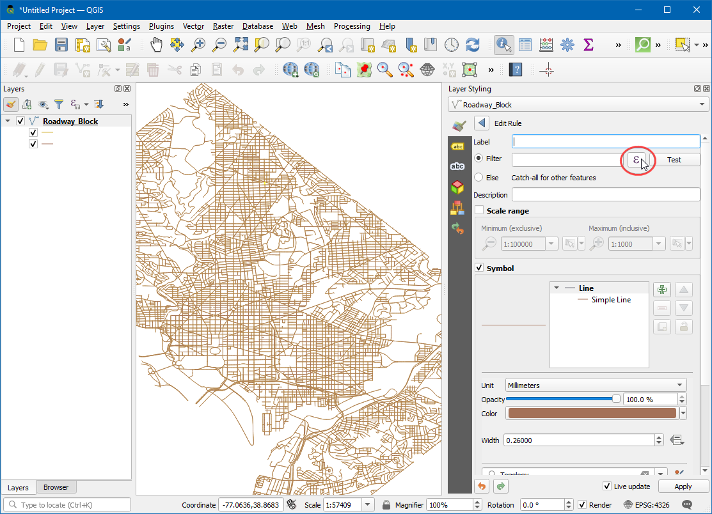
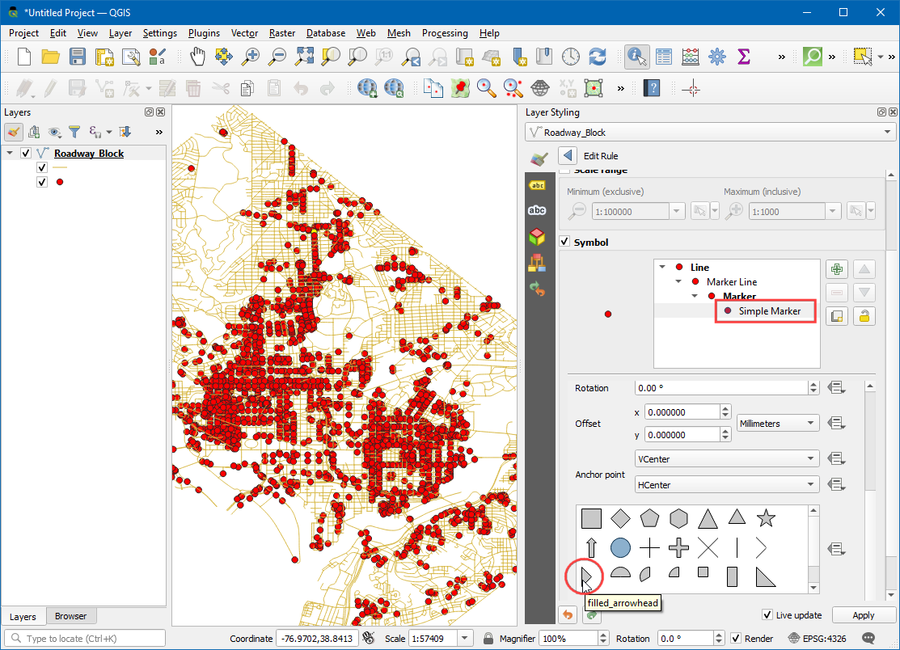
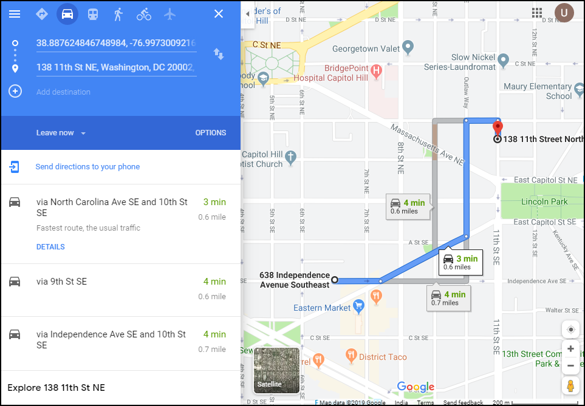

Basis netwerk visualisatie en routeren (QGIS3)¶
Netwerken maken, visualiseren en beheren is een belangrijk deel van GIS. Veel typen fysieke infrastructuur, zoals wegen, spoorwegen, nutsvoorzieningen, kunnen worden gemodelleerd als netwerken met lijnen en knopen - met daaraan gekoppelde eigenschappen. In deze handleiding zullen we leren hoe netwerken van wegen normaal gesproken worden gemodelleerd en het toepassen van enkele technieken voor opmaken om de eigenschappen voor routeren te visualiseren. We zullen ook de ingebouwde gereedschappen voor netwerkanalyses in QGIS3 gebruiken om het kortste pad te zoeken naar 2 punten langs het netwerk.
Overzicht van de taak¶
We zullen een laag nemen met een blok van wegen voor Washington DC, de verbindingen visualiseren en een netwerk bouwen om het kortste pad te zoeken tussen 2 willekeurige punten in de stad.
Andere vaardigheden die u zult leren¶
Hoe gegevens bepaalde ‘override’ te gebruiken om een pijlsymbool uit te lijnen, gebaseerd op de richting van de lijn.
De gegevens ophalen¶
De overheid van het district of Columbia deelt gratis honderden gegevenssets in de Open Data Catalog.
Download de Roadway Block gedeeld door DCGISopendata als een Shapefile.

Voor het gemak kunt u direct een kopie van de gegevensset downloaden vanaf de link hieronder:
Gegevensbron: [DCOPENDATA]
Procedure¶
Zoek in het paneel Browser naar het bestand
Roadway_Block-shp.zip. Vergroot het en sleep het bestandRoadway_Block-shpnaar het kaartvenster.

U zult een nieuwe lijnenlaag, genaamd
Roadway_Block, zien toegevoegd aan het paneel Lagen. Deze laag geeft elke weg weer in Washington DC. Selecteer het gereedschap Objecten identificeren op de werkbalk Attributen. Klik op een willekeurig wegsegment om te zien welke attributen daaraan zijn gekoppeld. Er zijn standaard attributen zoals de naam van de route, type route etc., er is ook een attribuut, genaamdSUMMARYDIR. Dit is een belangrijk attribuut om te importeren voor routeren omdat het specifieert of het segment voor twee richtingen of voor één richting is. Het bevat 4 verschillende waarden.BDvoor straten met twee richtingen.OB(Out Bound) voor straten met eenrichtingsverkeer, waar het verkeer is toegestaan in de richting van de lijn (beginpunt naar eindpunt) enIB(In Bound) voor straten met eenrichtingsverkeer, waar het verkeer in de tegengestelde richting van de lijn gaat. Er is ook een waarde??waarvoor we zullen aannemen dat daar verkeer in twee richtingen is toegestaan. We zullen nu de informatie in dat attribuut gebruiken om een pijl weer te geven op wegen met eenrichtingsverkeer.

Klik, in het paneel Lagen, op de knop Paneel Laag opmaken openen.Selecteer de renderer
Regel-gebaseerdin de keuzelijst.

We zullen een nieuwe stijl maken met een filter voor alleen de wegen met eenrichtingsverkeer. Klik op de knop Regel toevoegen +.

Klik, in het dialoogvenster Regel bewerken, op de knop Expressie.

In het dialoogvenster Expressie-string bouwer, vergroot het gedeelte Velden en waarden in het middenpaneel. Selecteer het attribuut
SUMMARYDIRen klik op Alle unieke in het paneel aan de rechterkant. De 4 waarden die we eerder hebben besproken verschijnen. Het hier hebben van deze waarden als een verwijzing helpt bij het bouwen van de expressie. Ook kunt u dubbelklikken op een waarde om die toe te voegen aan de expressie.

Het doel is om een expressie te maken die alle wegen met eenrichtingsverkeer selecteert. Voer de volgende expressie in en klik op OK.
"SUMMARYDIR" in ('IB', 'OB')
Wijzig vervolgens het Symboollaagtype naar
Symbolen-lijn.

Selecteer
op middelpuntonder Plaatsing markering.

Klik op het symbool
Standaard symbool. Scroll naar beneden en kies de markeringfilled_arrowhead. U zult zien dat het symbool dat op een pijlpunt lijkt nu zal verschijnen op de wegen met eenrichtingsverkeer. Maar zij wijzen allemaal maar in één enkele richting, terwijl wij weten dat ons filter wegen in verschillende richtingen bevat. We kunnen de symbolen verder verfijnen met symbolen met een data-bepaalde ‘override’ voor de waarde Rotatie.

Klik op de knop Data-bepaalde ‘override’ naast Rotatie.

We kunnen een expressie met voorwaarden invullen die verschillende waarden voor de rotatie teruggeven, afhankelijk van de richting voor eenrichtingsverkeer. Een rotatie van 180° graden voor de weg met tegengestelde richting zal de richting perfect maken. Hierin zullen we de wegen met het attribuut
IB180° roteren, zodat alle wegen de juiste richting voor de verkeersstroom hebben. Voer de volgende expressie in en klik op OK.
if( "SUMMARYDIR" = 'IB', 180, 0)
Nu zult u zien dat de pijlpunten zijn uitgelijnd op de juiste richting van de weg. We kiezen er voor om de pijlpunten alleen weer te geven op de wegen met eenrichtingsverkeer om de stijl niet te druk te maken. Niet gelabelde straten worden geacht wegen met tweerichtingsverkeer te zijn. Nu we het netwerk juist hebben opgemaakt, kunnen we enkele analyses uitvoeren. Ga naar .

Zoek en lokaliseer het algoritme . Dubbelklik om het te starten.

Selecteer, in het dialoogvenster Kortste pad (punt naar punt),
Roadway_Blockals de Vectorlaag die netwerk weergeeft. Behoud het Te berekenen type pad alsKortste. Vervolgens dienen we een begin- en eindpunt te kiezen. U kunt op de knop … klikken en op een willekeurig punt in het kaartvenster klikken. Als u de resultaten voor deze handleiding wilt repliceren, kunt u-76.99730092166396,38.887624846748984als het Startpunt invoeren en-76.99154831062152,38.89151000569929als het Eindpunt. Vergroot het gedeelte Gevorderde parameters. KiesSUMMARYDIRals het Richtingsveld. U moet bekend zijn met de waarden voor één richting voor de voorwaartse en achterwaartse verkeersstromen. VoerOBin als de Waarde voor voorwaartse richting enIBals de Waarde voor achterwaartse richting. Laat de andere waarden op hun standaard waarden staan en klik op Uitvoeren.

Het algoritme zal de geometrie van de laag en de opgegeven parameters gebruiken om een grafiek voor het netwerk te bouwen. Deze grafiek wordt dan gebruikt om het kortste pad te zoeken tussen begin- en eindpunten. Als het algoritme is voltooid zult u een nieuwe laag
Kortste padzien toegevoegd aan het paneel Lagen die het kortste pad weergeeft tussen start- en eindpunten.

U zult zien dat er veel mogelijke paden zijn tussen start- en eindpunten. Maar gegeven de beperkingen van het netwerk - zoals eenrichtingswegen, is het resultaat het kortst mogelijke pad. Het is altijd een goed idee om uw analyse en veronderstellingen te valideren. Een eenvoudige manier om het te valideren is om een derde partij service voor in kaart brengen te gebruiken om te zien of hun resultaten overeenkomen met die welke wij hebben berekend. Hier is het kortste pad voorgesteld door Google Maps tussen dezelfde start- en eindpunten. Zoals u kunt zien komt de aanbevolen kortste route exact overeen met onze resultaten - wat onze analyse valideert.

If you want to give feedback or share your experience with this tutorial, please comment below. (requires GitHub account)